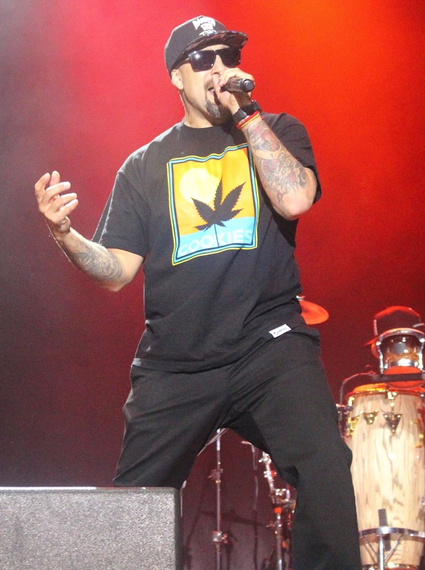
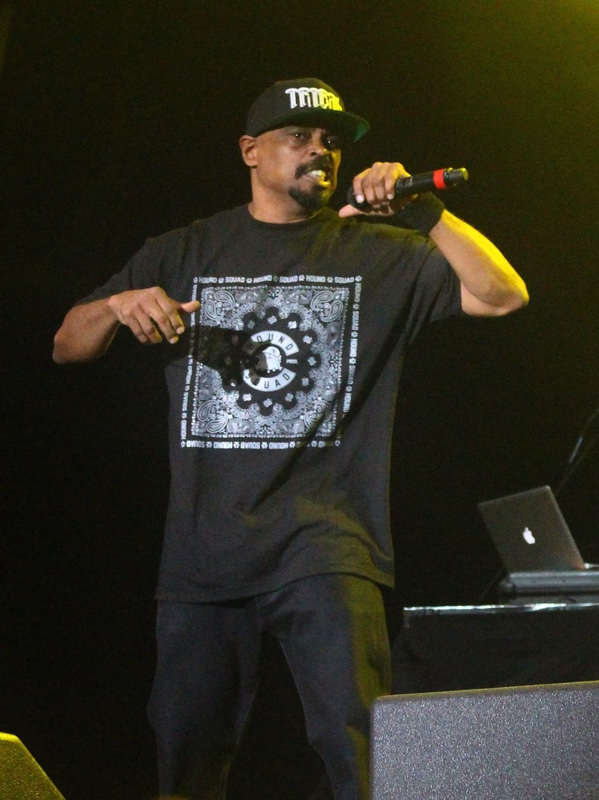

Cypress Hill is an American hip hop group from South Gate, California. They are a hip-hop group that has sold multi-platinum and platinum albums, having sold over 20 million albums worldwide. They are considered to be among the main progenitors of West Coast and 1990s hip hop. The group has been critically acclaimed for their first five albums.[2] All of the group members advocate for medical and recreational use of cannabis in the United States.[3] In 2019, Cypress Hill became the first hip hop group to have a star on the Hollywood Walk of Fame.[4]
Louis "B-Real" Freese – vocals (1988–present)
Louis Mario Freese (born June 2, 1970),[3] known by his stage name B-Real, is an American rapper. Since 1991, he has been one of two lead rappers in the hip hop group Cypress Hill, along with Sen Dog. He has also been a part of the rap metal band Kush (2000–2002), the hip hop supergroup Serial Killers (2013-present) and the rap rock supergroup Prophets of Rage (2016–2019). He has released a variety of solo mixtapes, as well as two solo albums: Smoke n Mirrors (2009) and Tell You Something (2020).


Senen "Sen Dog" Reyes – vocals (1988–1995, 1998–present)
Senen Reyes (born November 22, 1965), also known by his stage name Sen Dog, is a Cuban-American rapper and musician who is best known as a member of the rap group Cypress Hill and as the lead vocalist for the heavy metal band Powerflo.[1] He has been developing a solo career in addition to his work with Cypress Hill and Powerflo, and is the lead vocalist for rap rock band SX-10.[2][3]
Eric "Eric Bobo" Correa – drums, percussion (1993–present)
Eric "Bobo" Correa is the son of Latin jazz musician Willie Bobo.[1] He began drumming at the age of four, and made his first public appearance at the age of five, performing on stage with his father.[2]
Correa ended up recording with the Beastie Boys for the albums Ill Communication and Hello Nasty. While on tour with the Beasties, Correa encountered Cypress Hill and joined the group as their percussionist for their world tours,[3] splitting time between both groups.